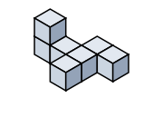
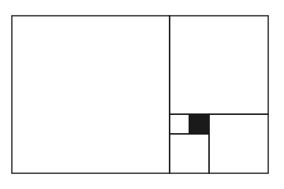
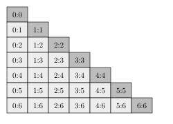
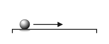
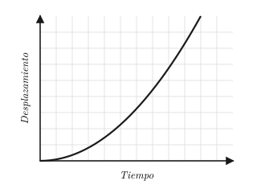
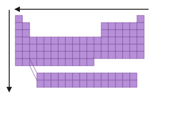

Examen ECOEMS 2016 — Versión 3
128 preguntas con respuestas marcadas (✓)
Habilidad matemática (16 preguntas)
Selecciona el número que completa correctamente la siguiente sucesión.
$$98,\ 79,\ 71,\ 64,\ \_\_\_$$
Explicación: Las diferencias son $-9, -8, -7, -6$, por lo que el siguiente término es $64 - 6 = 58$.
Indica cuáles son los dos números que completan correctamente la sucesión.
$$-4.3,\ \_\_\_,\ \_\_\_,\ 2.6,\ 4.9$$
A) -3.0, -0.3
B) -2.0, 0.3
C) -0.2, 1.3
D) 0, 1.3
Explicación: La sucesión tiene razón aritmética $+2.3$: $-4.3, -2.0, 0.3, 2.6, 4.9$.
¿Cuál es la sucesión que se genera al sustituir $x$ por $1, 2, 3$ y $4$ en la siguiente expresión?
$$-\frac{1}{x}(-1)^x$$
A) $1,\ -\frac{1}{2},\ \frac{1}{3},\ -\frac{1}{4}$
B) $1,\ \frac{1}{2},\ \frac{1}{3},\ \frac{1}{4}$
C) $-1,\ \frac{1}{2},\ -\frac{1}{3},\ \frac{1}{4}$
D) $-1,\ -\frac{1}{2},\ -\frac{1}{3},\ -\frac{1}{4}$
Explicación: Para $x=1$: $-\frac{1}{1}(-1)^1 = 1$. Para $x=2$: $-\frac{1}{2}(-1)^2 = -\frac{1}{2}$. Para $x=3$: $-\frac{1}{3}(-1)^3 = \frac{1}{3}$. Para $x=4$: $-\frac{1}{4}(-1)^4 = -\frac{1}{4}$.
¿A cuánto equivale $x_9$ (el elemento nueve) en la siguiente sucesión?
$$x_1 = 2,\ x_2 = 5,\ x_3 = 10,\ x_4 = 17,\ \ldots$$
Explicación: El patrón es $x_n = n^2 + 1$. Entonces $x_9 = 9^2 + 1 = 82$.
Selecciona entre las opciones la figura siguiente de esta serie:
Explicación: Dos cualidades no cambian en la serie: el círculo es negro y el polígono blanco. El número de lados sigue 6, 5, 4, 3 (triángulo). El patrón inscrito/circunscrito alterna: inscrito, circunscrito, inscrito, circunscrito → el cuarto elemento es un triángulo blanco circunscrito al círculo negro (círculo dentro del triángulo).
Selecciona la figura que corresponde al elemento siguiente de esta serie.
Explicación: La parte constante es la cruz (+). Las dos partes variables (rectángulo y línea vertical) avanzan en sentido horario alrededor de la cruz; la figura completa la serie con rectángulo abajo-izq y línea arriba-der.
Esta serie de figuras es una forma de representar los números binarios: 0, 1, 2 y 3.
¿Cuál es el siguiente elemento de esta serie, es decir, la opción que representa el número 4?
Explicación: En esta notación binaria los círculos negros valen 0 y los blancos valen 1, con valor posicional (el de la izquierda vale más). El número 4 en binario es 100, que se representa con un círculo blanco a la izquierda y dos negros: ○●●.
Selecciona la figura que corresponde al elemento siguiente de esta serie.
Explicación: El círculo gira 120° antihorario y alterna blanco/negro: en el elemento 4 ha completado 360° y vuelve a su color negro inicial. Los dos triángulos cercanos al círculo comparten su color (negros) y el lejano es blanco.
Si cambiaras la posición de solamente un cubo de esta figura, ¿cuál cuerpo no podrías formar?

Explicación: Sólo se permite mover un cubo. La opción C requiere mover dos cubos para conseguirse desde la figura de referencia.
Si colocaras esta pieza mecánica tridimensional sobre su base más grande, ¿cómo se vería desde arriba?
Explicación: Reconstruye mentalmente la pieza en 3D apoyada sobre su base más grande. La vista superior muestra un cuadrado con un escalón pequeño en la esquina inferior derecha (correspondiente al cubo pequeño).
Si trazaras las figuras mostradas sobre cartón y las recortas por su perímetro, ¿cuál no te serviría para construir un cubo al doblar el cartón por las aristas?
Explicación: El desarrollo D no puede formar un cubo: al doblarlo, un lado queda doble y a otra cara le falta su pieza. Los otros tres patrones (A, B, C) sí son desarrollos válidos del cubo.
La siguiente figura representa una tira de papel con nueve triángulos equiláteros. Si doblaras el primer triángulo sucesivamente por las aristas numeradas, ¿en qué posición quedaría el vértice $A$ después del sexto doblez?
Explicación: Haciendo el ejercicio físicamente (o siguiendo la tabla de posiciones del vértice A para cada doblez): doblez 1→D, 2→D, 3→D, 4→G, 5→G, 6→G. Después del sexto doblez, A queda en G.
¿Cuánto mide el ángulo $\alpha$?
A) $45°$
B) $60°$
C) $72°$
D) $90°$
Explicación: El ángulo exterior de un pentágono regular es $\frac{360°}{5} = 72°$.
El área del cuadrado negro es igual a 1. ¿Cuál es el área del cuadrado más grande (en la posición izquierda)?

Explicación: Si el cuadrado negro mide 1, su lado mide 1. Los dos cuadrados pequeños adyacentes miden lado 1; el cuadrado inferior derecho contiguo mide lado 2; el cuadrado superior derecho mide lado 3; el cuadrado superior derecho que cierra el rectángulo mide lado 5; y el cuadrado grande izquierdo mide lado 8. Área $= 8^2 = 64$.
¿Cuál es el número faltante en la celda vacía?
| Col 1 | Col 2 | Col 3 |
|---|
| 3 | 6 | $\frac{1}{2}$ |
| 4 | 12 | $\frac{1}{3}$ |
| 5 | __ | $\frac{1}{4}$ |
Explicación: El patrón de la tercera columna es $\frac{\text{col 1}}{\text{col 2}}$ simplificado: $\frac{3}{6}=\frac{1}{2}$, $\frac{4}{12}=\frac{1}{3}$, entonces $\frac{5}{20}=\frac{1}{4}$. El número faltante es 20.
La edad de un niño es la sexta parte de la edad de su abuela y ocho años después será la cuarta parte de la edad que tenga entonces la abuela. ¿Cuál es la edad actual del niño?
Explicación: Sea $n$ la edad del niño y $a$ la de la abuela. Entonces $n=\frac{a}{6}$ y $n+8=\frac{1}{4}(a+8)$. De la primera: $a=6n$. Sustituyendo: $4(n+8)=6n+8 \Rightarrow 4n+32=6n+8 \Rightarrow 2n=24 \Rightarrow n=12$.
Matemáticas (12 preguntas)
¿Cuál es el valor de $x$ en la siguiente expresión matemática?
$$x = 1 - 2(1-2) - 2(2-1) - 1$$
A) $-1$
B) $0$
C) $1$
D) $2$
Explicación: $x = 1 - 2(-1) - 2(1) - 1 = 1 + 2 - 2 - 1 = 0$.
¿Cuál de las siguientes opciones es el mínimo común múltiplo de 9 y 12?
$$\text{mcm}(9, 12) = $$
Explicación: Factorizando: $9 = 3^2$, $12 = 2^2 \cdot 3$. El mcm toma los factores con mayor exponente: $2^2 \cdot 3^2 = 4 \cdot 9 = 36$.
Si un examen contiene 128 preguntas de opción múltiple y logras obtener 112 aciertos, ¿cuál es tu porcentaje de respuestas incorrectas?
A) 11.2 %
B) 12.5 %
C) 87.5 %
D) 112.0 %
Explicación: Porcentaje de aciertos: $\frac{112}{128} \times 100\% = 87.5\%$. Porcentaje de incorrectas: $100\% - 87.5\% = 12.5\%$.
¿Cuánto vale $a$ en este sistema de ecuaciones?
$$a + 3b = 15$$
$$2a - b = 2$$
Explicación: Multiplicando la segunda ecuación por 3: $6a - 3b = 6$. Sumando con la primera: $7a = 21$, por lo que $a = 3$.
Selecciona la opción que indica cuál producto notable equivale a este binomio: $4x^2 - 4y^2$
A) $(2x + 2y)^2$
B) $(2x - 2y)^2$
C) $2(x - y)^2$
D) $(2x + 2y)(2x - 2y)$
Explicación: $4x^2 - 4y^2 = (2x)^2 - (2y)^2 = (2x+2y)(2x-2y)$, diferencia de cuadrados.
¿Cuál es el promedio de los siguientes números?
$$0.15,\ 0.25,\ 0.2,\ 0.5,\ 1.0$$
A) 0.32
B) 0.40
C) 0.42
D) 0.45
Explicación: Suma: $0.15 + 0.25 + 0.2 + 0.5 + 1.0 = 2.10$. Promedio: $\frac{2.10}{5} = 0.42$.
El juego de dominó contiene 28 fichas. ¿Cuál es la probabilidad de extraer al azar una ficha con el mismo número de puntos en ambos lados?

A) 7 %
B) 25 %
C) 28 %
D) 66 %
Explicación: Hay 7 "mulas" (0:0, 1:1, ..., 6:6) de 28 fichas totales. Probabilidad: $\frac{7}{28} = 0.25 = 25\%$.
Un teléfono celular cuesta \$ 500 de enganche y \$ 50 mensuales durante 10 meses. Selecciona entre las opciones la gráfica que representa esta función.
Explicación: La función es $y = 500 + 50x$. En $x=0$, $y=500$ (enganche). La gráfica es una recta con ordenada al origen 500 y pendiente positiva 50.
Un balín se desplaza sobre una barra acanalada horizontal a 20 cm cada 4 segundos. ¿En cuántos segundos habrá recorrido 160 cm?

A) 20 s
B) 32 s
C) 64 s
D) 86 s
Explicación: Regla de tres directa: si en 4 s recorre 20 cm, en $x$ segundos recorre 160 cm. $x = \frac{160 \cdot 4}{20} = 32$ s.
Un albañil construye $12\ \text{m}^2$ de muro en 3 días y otro, $10\ \text{m}^2$ de muro en 5 días. ¿En cuánto tiempo pueden construir los dos albañiles juntos un muro de $54\ \text{m}^2$?
A) 3 días
B) 6 días
C) 9 días
D) 12 días
Explicación: Rendimientos: $\frac{12}{3} = 4$ y $\frac{10}{5} = 2$ m²/día. Juntos: $4 + 2 = 6$ m²/día. Tiempo: $\frac{54}{6} = 9$ días.
En un día soleado, un poste de 9 m de altura proyecta una sombra de 3 m de largo. Si al mismo tiempo un edificio adjunto proyecta una sombra de 12 m, ¿cuál es la altura del edificio?
A) 30 m
B) 32 m
C) 34 m
D) 36 m
Explicación: Triángulos semejantes: $\frac{9}{3} = \frac{x}{12} \Rightarrow x = \frac{12 \cdot 9}{3} = 36$ m.
En un triángulo rectángulo,
$$\cos\alpha = \frac{4}{5}$$
¿Cuánto mide el cateto opuesto?
Explicación: $\cos\alpha = \frac{\text{cateto adyacente}}{\text{hipotenusa}} = \frac{4}{5}$. Por Pitágoras: $b^2 = 5^2 - 4^2 = 25 - 16 = 9$, por lo que el cateto opuesto vale 3.
Ciencias II (Física) (12 preguntas)
¿Qué es una hipótesis?
A) Una pregunta acerca de un fenómeno natural
B) Una suposición razonable acerca de la respuesta a una pregunta
C) Una predicción
D) Una conclusión experimentalmente verificable
Explicación: Una hipótesis es una suposición razonable acerca de la respuesta a una pregunta. Para que sea científica debe referirse a la comprensión de la naturaleza y ser susceptible de probarse experimentalmente.
Analiza la tabla siguiente.
| Tiempo (s) | Desplazamiento (m) |
|---|
| 0 | 0 |
| 1 | 25 |
| 2 | 50 |
| 3 | 75 |
| 4 | 100 |
Se puede concluir que el cuerpo en movimiento tiene:
A) Rapidez constante mayor que cero
B) Velocidad constante mayor que cero
C) Velocidad variable
D) Aceleración constante mayor que cero
Explicación: La velocidad ($v=d/t$) es constante e igual a 25 m/s. Como hay dirección implícita en el desplazamiento (vector), se trata de velocidad constante, no sólo rapidez.
Analiza la tabla y la gráfica siguientes.
| Tiempo (s) | Desplazamiento (m) |
|---|
| 0 | 0 |
| 2 | 20 |
| 4 | 80 |
| 6 | 180 |
| 8 | 320 |
| 10 | 500 |
Se puede concluir que el cuerpo en movimiento tiene:

A) Rapidez constante mayor que cero
B) Velocidad constante mayor que cero
C) Aceleración constante mayor que cero
D) Aceleración variable
Explicación: La aceleración $a = d/t^2$ es constante e igual a 5 m/s² (por ejemplo $20/4 = 5$, $80/16 = 5$, $180/36 = 5$). La gráfica parabólica $d \propto t^2$ confirma MRUA.
La sonda Voyager 1 viaja por el espacio exterior en movimiento rectilíneo uniforme. Indica cuál concepto de la física explica la causa de tal movimiento.
A) Inercia
B) Peso
C) Masa
D) Combustible
Explicación: La inercia es la tendencia de un cuerpo a permanecer en reposo o en movimiento rectilíneo uniforme mientras no actúe sobre él una fuerza. En el espacio exterior, donde no hay fuerzas significativas, la sonda mantiene su movimiento por inercia.
Al aplicar una fuerza de 4 newtons, un cuerpo experimenta una aceleración de $2\ \text{m/s}^2$. ¿Cuál es la masa de ese cuerpo?
A) 2 kg
B) 4 kg
C) 6 kg
D) 8 kg
Explicación: $F = ma \Rightarrow m = F/a = 4\ \text{N} / 2\ \text{m/s}^2 = 2$ kg.
Si simbolizamos energía potencial como EP y energía cinética como EC, ¿cómo es la energía mecánica de la masa colgante de un péndulo que se está balanceando, cuando está en la posición más alta de su movimiento?
A) EP máxima, EC mínima
B) EP disminuye, EC aumenta
C) EP mínima, EC máxima
D) EP aumenta, EC disminuye
Explicación: En la posición más alta, el péndulo está momentáneamente detenido (velocidad = 0), por lo que EC es mínima (cero). La altura es máxima, por lo que EP es máxima.
Un gato hidráulico tiene un área de entrada de $0.01\ \text{m}^2$ y un área de salida de $1\ \text{m}^2$. Si con un pistón se aplica una fuerza de entrada de 10 N, ¿cuál es la fuerza de salida?
A) 1 N
B) 10 N
C) 100 N
D) 1 000 N
Explicación: Principio de Pascal: $\frac{F_e}{A_e} = \frac{F_s}{A_s}$. $F_s = \frac{F_e \cdot A_s}{A_e} = \frac{10 \cdot 1}{0.01} = 1\,000$ N.
Si al hacer un experimento observas que dos esferitas de dos diferentes péndulos eléctricos se atraen entre sí, ¿qué puedes concluir al respecto?
A) Que ambas esferitas son eléctricamente neutras
B) Que ambas esferitas tienen carga eléctrica negativa
C) Que ambas esferitas tienen carga eléctrica positiva
D) Que ambas esferitas tienen carga eléctrica de diferente signo
Explicación: Las cargas eléctricas de diferente signo se atraen entre sí; las del mismo signo se repelen; las neutras no se atraen.
La magnitud que indica qué tan caliente o frío está un cuerpo en comparación con un patrón de medida se denomina:
A) Temperatura
B) Calor
C) Energía interna
D) Punto de ebullición
Explicación: Temperatura es la magnitud que indica qué tan caliente o frío está un cuerpo respecto a un patrón. El calor es energía que se transfiere por diferencia de temperatura.
¿Cómo transfiere calor el viento?
A) Por conducción
B) Por convección
C) Por radiación
D) Por un cambio de estado
Explicación: La convección es la forma de transferencia de calor en fluidos (líquidos y gases). El viento, al ser aire en movimiento, transfiere calor por convección.
¿Qué modelo atómico logró explicar cómo se emite la luz al pasar un electrón desde un nivel de mayor energía a un nivel de menor energía?
A) Modelo atómico de Dalton
B) Modelo atómico de Thomson
C) Modelo atómico de Rutherford
D) Modelo atómico de Bohr
Explicación: El modelo atómico de Bohr explica que al saltar un electrón de un nivel de mayor energía a uno de menor energía se emite un fotón de luz.
¿Qué tipo de ondas electromagnéticas se utilizan en telefonía celular y televisión por satélite?
A) Microondas
B) Infrarrojo
C) Ultravioleta
D) Rayos X
Explicación: Las microondas son ondas electromagnéticas utilizadas en comunicaciones telefónicas de larga distancia, telefonía celular y televisión por satélite.
Ciencias III (Química) (12 preguntas)
Con la finalidad de separar los componentes de una mezcla de agua y aceite se utiliza una bureta y dos vasos de precipitados. Esto se consigue porque el aceite no se disuelve en el agua y ambas sustancias tienen diferente densidad. ¿Cómo se denomina este método de separación de mezclas?
A) Decantación
B) Destilación
C) Filtración
D) Cristalización
Explicación: La decantación se utiliza para separar dos líquidos insolubles entre sí, como agua y aceite, aprovechando su diferencia de densidad.
Selecciona el fenómeno natural que no es un cambio químico.
A) La combustión de la madera
B) La digestión de los alimentos en el estómago
C) La oxidación de una rebanada de manzana al contacto con el aire
D) La descomposición de la luz blanca en las luces de colores del arcoíris
Explicación: La descomposición de la luz blanca en colores es un fenómeno físico (separación por refracción), no una reacción química. Las otras tres opciones implican reacciones químicas.
El isótopo más abundante del carbono es $^{12}\text{C}$, el cual está constituido por 6 protones, 6 neutrones y 6 electrones. ¿Cuál es su número de masa?
Explicación: El número de masa es la suma de protones y neutrones: $6 + 6 = 12$. Los electrones no se cuentan.
Indica cuáles son los símbolos químicos de los elementos potasio, sodio y azufre.
A) P, S, A
B) K, S, A
C) K, Na, S
D) P, Na, S
Explicación: Potasio: K (del latín kalium); Sodio: Na (del latín natrium); Azufre: S (del latín sulphur).
¿Qué propiedades químicas presenta un átomo que posee un electrón de valencia?
A) Es un elemento metálico y tiende a perder su único electrón de valencia al formar un enlace químico
B) Es un elemento metálico y tiende a ganar un protón para formar un ion positivo
C) Es un elemento halógeno y tiende a ganar un electrón de valencia al formar un enlace químico
D) Es un gas noble y tiende a no reaccionar químicamente
Explicación: Los elementos con un electrón de valencia (como Na, K) son metálicos y tienden a perder ese electrón al formar enlaces, originando cationes.
Selecciona la reacción química que no cumple con la ley de conservación de la masa.
A) $2\ \text{H}_2 + \text{O}_2 \to 2\ \text{H}_2\text{O}$
B) $\text{NaOH} + \text{HCl} \to \text{NaCl} + \text{H}_2\text{O}$
C) $\text{H}_2\text{O} + \text{CO}_2 \to \text{H}_2\text{CO}_3$
D) $2\ \text{H}_2\text{S} + 3\ \text{O}_2 \to 2\ \text{H}_2\text{O} + \text{SO}_2$
Explicación: En D, reactivos: 4 H, 2 S, 6 O; productos: 4 H, 1 S, 4 O. No está balanceada (faltan átomos de S y O en los productos). Lo correcto sería $2\,\text{H}_2\text{S} + 3\,\text{O}_2 \to 2\,\text{H}_2\text{O} + 2\,\text{SO}_2$.
Según esta ecuación química, al suministrar energía a dos moléculas de agua $(2\ \text{H}_2\text{O})$ se producen dos moléculas de hidrógeno $(2\ \text{H}_2)$ y una molécula de oxígeno $(\text{O}_2)$.
$$2\ \text{H}_2\text{O} + \text{Energía} \to 2\ \text{H}_2 + \text{O}_2$$
¿Qué podemos concluir acerca de esta reacción?
A) Es exotérmica
B) Es endotérmica
C) Es una reacción de neutralización
D) Es una reacción de polimerización
Explicación: Una reacción endotérmica absorbe energía (como esta, donde se necesita aporte de energía para romper las moléculas de agua). Una exotérmica libera energía.
Selecciona entre las opciones el elemento más electronegativo.
Explicación: Excluyendo gases nobles (He), la electronegatividad aumenta hacia arriba y a la derecha en la tabla periódica. Flúor (F) tiene el valor más alto: 4.0.
Es un elemento semimetálico muy utilizado en la industria electrónica.
A) Silicio
B) Hierro
C) Cobre
D) Carbono
Explicación: El silicio es un semimetal con propiedades de semiconductor, base de los microcircuitos en celulares, computadoras y otros dispositivos electrónicos.
¿Qué propiedad de los elementos ilustra esta tabla periódica?

A) Aumento de número atómico
B) Aumento de masa atómica
C) Aumento de electronegatividad
D) Aumento de carácter metálico
Explicación: El carácter metálico aumenta de derecha a izquierda y de arriba hacia abajo en la tabla periódica, en sentido opuesto a la electronegatividad.
Selecciona la propiedad química que no presenta un ácido.
A) Posee un sabor agrio característico
B) Es irritante al hacer contacto con la piel
C) En solución acuosa, el papel indicador adquiere un color rojo
D) pH > 7
Explicación: Los ácidos tienen pH menor que 7. Un pH > 7 corresponde a sustancias básicas. Las otras tres propiedades sí son características de los ácidos.
Analiza la siguiente reacción redox:
$$\text{Cu}_{(s)} + 2\,\text{Ag}^+_{(ac)} \to \text{Cu}^{2+}_{(ac)} + 2\,\text{Ag}_{(s)}$$
¿Cuál catión se reduce?
A) Cu
B) $\text{Ag}^+$
C) $\text{Cu}^{2+}$
D) Ag
Explicación: Reducirse significa ganar electrones. $\text{Ag}^+ + e^- \to \text{Ag}$ es la semirreacción de reducción. El cobre se oxida (pierde electrones).
Ciencias I (Biología) (12 preguntas)
Es la capacidad de los seres vivos de regular sus procesos internos para permanecer en un estado estable y funcionar normalmente, aun cuando haya cambios en el ambiente.
A) Irritabilidad
B) Homeostasis
C) Metabolismo
D) Evolución
Explicación: La homeostasis es la capacidad de los seres vivos de regular sus procesos internos para permanecer en un estado estable. Un ejemplo es la temperatura corporal de 37 °C.
Los organismos que constituyen una especie no son idénticos entre sí, sino que tienen diferencias sutiles. Aquellos organismos que sobreviven y se reproducen son más aptos por estar mejor adaptados al ambiente que aquellos que no, y heredan a su progenie las características que confieren tal aptitud. En consecuencia, las características de esos organismos más aptos son más comunes entre la población en la siguiente generación, y menos comunes las de los menos aptos. ¿Cómo denominó Charles Darwin a este proceso de supervivencia de los más aptos?
A) Uso y desuso de los órganos
B) Herencia de los caracteres adquiridos
C) El origen de las especies
D) Selección natural
Explicación: Darwin acuñó el término selección natural para describir el proceso en el que los organismos más aptos sobreviven y heredan sus características.
¿Qué necesitan todas las plantas para realizar la fotosíntesis en los cloroplastos?
A) Agua y dióxido de carbono
B) Agua y oxígeno
C) Luz, agua y dióxido de carbono
D) Luz, agua y oxígeno
Explicación: La fotosíntesis requiere luz solar, agua del suelo y dióxido de carbono del aire para producir glucosa y oxígeno.
Es el conjunto de todos los caracteres visibles de un organismo.
A) Fenotipo
B) Genotipo
C) Cariotipo
D) Genoma
Explicación: El fenotipo es el conjunto de caracteres visibles de un organismo. El genotipo es el conjunto de genes; el cariotipo, el conjunto de cromosomas; y el genoma, toda la información en el ADN.
En el ADN, la información genética se almacena en la secuencia de:
A) Aminoácidos
B) Cromosomas
C) Las bases nitrogenadas: adenina, guanina, citosina y timina
D) Las bases nitrogenadas: adenina, guanina, citosina y uracilo
Explicación: El ADN almacena la información genética en una secuencia de cuatro bases nitrogenadas: adenina (A), guanina (G), citosina (C) y timina (T). El uracilo (U) está en el ARN, no en el ADN.
La principal molécula portátil para el suministro de energía en todos los procesos celulares, la cual es un producto de glucólisis, fotosíntesis y respiración, se denomina:
A) Agua
B) Glucosa
C) Vitamina C
D) ATP (adenosín trifosfato)
Explicación: El ATP es la molécula portátil para el suministro de energía en las células, producto de glucólisis, fotosíntesis y respiración.
Ordena de manera cronológica estos procesos referentes a la reproducción humana:
a. Implantación del embrión en el útero
b. Ovulación
c. Formación de aparatos y sistemas
d. Parto
e. Fecundación
A) $e, b, c, a, d$
B) $b, e, a, c, d$
C) $b, e, c, a, d$
D) $e, b, c, d, a$
Explicación: El orden correcto es: 1) Ovulación, 2) Fecundación, 3) Implantación del embrión en el útero, 4) Formación de aparatos y sistemas, 5) Parto.
A diferencia de las carnes, las frutas y verduras son alimentos básicos en una dieta saludable porque contienen principalmente:
A) Vitaminas y minerales
B) Proteínas
C) Carbohidratos
D) Grasas
Explicación: Las frutas y verduras son las principales fuentes de vitaminas y minerales en la dieta. Las carnes aportan proteínas; los cereales, carbohidratos.
Es una enfermedad crónica que se caracteriza por una acumulación excesiva de grasa en el cuerpo. Su causa es una alimentación inadecuada por un consumo abundante de grasas, carbohidratos y alimentos "chatarra". Predispone al paciente a enfermedades cardiovasculares y diabetes, entre otras. Se puede prevenir con base en una alimentación adecuada.
A) Anorexia nerviosa
B) Bulimia
C) Infarto
D) Obesidad
Explicación: La obesidad es la enfermedad crónica caracterizada por acumulación excesiva de grasa por alimentación inadecuada, que predispone a enfermedades cardiovasculares y diabetes.
Selecciona la opción que presenta ordenados de menor a mayor complejidad los niveles de organización de los seres vivos, los cuales son el campo de estudio de la ecología.
A) Población, comunidad, ecosistema, biosfera
B) Comunidad, población, ecosistema, biosfera
C) Ecosistema, población, comunidad, biosfera
D) Biosfera, ecosistema, población, comunidad
Explicación: De menor a mayor complejidad: Población (organismos de una especie) → Comunidad (todas las poblaciones de un ecosistema) → Ecosistema (comunidad + ambiente) → Biosfera (todos los ecosistemas).
Es el ecosistema con la mayor biodiversidad del planeta.
A) Sabana
B) Bosque templado
C) Bosque tropical lluvioso
D) Tundra
Explicación: El bosque tropical lluvioso (selva) es el ecosistema con mayor biodiversidad, ubicado en latitudes tropicales con alta luz, lluvia abundante y suelo siempre húmedo.
Es el progreso que consiste en satisfacer las necesidades de las generaciones actuales, sin comprometer la capacidad de las generaciones futuras de satisfacer las suyas.
A) Revolución Industrial
B) Globalización
C) Explotación de los recursos naturales
D) Desarrollo sustentable
Explicación: Esta es la definición clásica de desarrollo sustentable (Informe Brundtland, 1987).
Habilidad verbal (16 preguntas)
Brown, Dan, El símbolo perdido, Planeta Internacional, México, 2009, p. 52-54.
Capítulo 7
Katherine Solomon cruzó a toda velocidad el estacionamiento bajo la fría lluvia, deseando llevar puesto algo más que unos pantalones vaqueros y un suéter de cashmere. Al acercarse a la entrada principal del edificio, el estruendo de los gigantescos purificadores de aire se hizo más intenso. Pero ella apenas los oyó, en sus oídos todavía resonaba la llamada que acababa de recibir.
"Lo que su hermano cree que está escondido en Washington... puede ser encontrado."
A Katherine le pareció algo casi imposible de creer. Ella y el hombre que la había llamado todavía tenían muchas cosas que discutir y habían acordado hacerlo esa misma tarde.
Al llegar a la puerta principal, sintió la misma excitación que siempre sentía al entrar en el pantagruélico edificio. "Nadie sabe que este lugar está aquí." En el letrero de entrada decía:
CENTRO DE APOYO DEL MUSEO SMITHSONIAN (SMSC)
A pesar de contar con más de una docena de enormes museos en el National Mall, la colección de la Smithsonian Institution era tan grande que sólo un 2 por ciento podía ser exhibida al mismo tiempo. El 98 por ciento restante tenía que ser almacenado en algún lugar. Y ese lugar... era éste.
Era de esperar, pues, que este edificio albergara una diversidad de objetos asombrosamente variada: Budas gigantes, códices manuscritos, dardos envenenados de Nueva Guinea, cuchillos con joyas incrustadas, un kayak hecho de barbas de ballena. Igual de alucinantes eran los tesoros naturales del edificio: esqueletos de plesiosaurio, una inestimable colección de meteoritos, un calamar gigante e incluso una colección de calaveras de elefante que había traído de un safari africano el mismo Teddy Roosevelt.
Pero el secretario de la Smithsonian, Peter Solomon, no había traído a su hermana al SMSC por nada de eso. La había traído a este lugar no para contemplar maravillas científicas, sino para crearlas. Y eso era exactamente lo que Katherine había estado haciendo los últimos tres años.
En lo más profundo de este edificio, en la oscuridad de sus más remotos recovecos, había un pequeño laboratorio científico sin igual en todo el mundo. Los recientes descubrimientos que Katherine había hecho en el campo de la ciencia noética tenían ramificaciones en cualquier disciplina: de la física a la historia, pasando por la filosofía o la religión. "Pronto todo cambiará", pensó ella.
Al entrar Katherine en el vestíbulo, el guardia de recepción escondió rápidamente un transistor y se quitó los auriculares de las orejas.
—¡Señora Solomon! —dijo con una amplia sonrisa.
—¿Los pieles rojas?
Sintiéndose culpable, el guardia se sonrojó.
—El previo al partido.
Ella sonrió.
—No diré nada —se dirigió al detector de metales y vació sus bolsillos. Cuando se quitó el Cartier de oro de la muñeca sintió la habitual punzada de tristeza. Era un regalo que le había hecho su madre por su cumpleaños dieciocho. Hacía casi diez años que había muerto de forma violenta... en sus brazos.
—Esto... ¿señora Solomon? —susurró el guardia en tono burlón—. ¿Nos contará algún día lo que hace ahí dentro?
Ella levantó la mirada.
—Algún día, Kyle. Pero no esta noche.
—Vamos —insistió—. ¿Un laboratorio secreto... en un museo secreto? Debe de estar haciendo usted algo bastante interesante.
"Mucho más que interesante", pensó Katherine mientras recogía sus cosas. La verdad era que Katherine estaba haciendo una ciencia tan avanzada que ya casi ni parecía ciencia.
¿Por qué Katherine Solomon apenas oyó el estruendo de los gigantescos purificadores de aire del edificio?
A) Porque los purificadores tenían un sistema amortiguador de ruido
B) Porque Katherine tenía una deficiencia auditiva
C) Porque Katherine estaba concentrada en un mensaje que acababa de recibir por teléfono
D) Porque el sistema de purificación de aire se apagaba automáticamente al abrir la puerta de entrada del edificio
Explicación: El texto dice: «en sus oídos todavía resonaba la llamada que acababa de recibir», lo que indica que estaba concentrada en el mensaje telefónico.
Brown, Dan, El símbolo perdido, Planeta Internacional, México, 2009, p. 52-54.
Capítulo 7
Katherine Solomon cruzó a toda velocidad el estacionamiento bajo la fría lluvia, deseando llevar puesto algo más que unos pantalones vaqueros y un suéter de cashmere. Al acercarse a la entrada principal del edificio, el estruendo de los gigantescos purificadores de aire se hizo más intenso. Pero ella apenas los oyó, en sus oídos todavía resonaba la llamada que acababa de recibir.
"Lo que su hermano cree que está escondido en Washington... puede ser encontrado."
A Katherine le pareció algo casi imposible de creer. Ella y el hombre que la había llamado todavía tenían muchas cosas que discutir y habían acordado hacerlo esa misma tarde.
Al llegar a la puerta principal, sintió la misma excitación que siempre sentía al entrar en el pantagruélico edificio. "Nadie sabe que este lugar está aquí." En el letrero de entrada decía:
CENTRO DE APOYO DEL MUSEO SMITHSONIAN (SMSC)
A pesar de contar con más de una docena de enormes museos en el National Mall, la colección de la Smithsonian Institution era tan grande que sólo un 2 por ciento podía ser exhibida al mismo tiempo. El 98 por ciento restante tenía que ser almacenado en algún lugar. Y ese lugar... era éste.
Era de esperar, pues, que este edificio albergara una diversidad de objetos asombrosamente variada: Budas gigantes, códices manuscritos, dardos envenenados de Nueva Guinea, cuchillos con joyas incrustadas, un kayak hecho de barbas de ballena. Igual de alucinantes eran los tesoros naturales del edificio: esqueletos de plesiosaurio, una inestimable colección de meteoritos, un calamar gigante e incluso una colección de calaveras de elefante que había traído de un safari africano el mismo Teddy Roosevelt.
Pero el secretario de la Smithsonian, Peter Solomon, no había traído a su hermana al SMSC por nada de eso. La había traído a este lugar no para contemplar maravillas científicas, sino para crearlas. Y eso era exactamente lo que Katherine había estado haciendo los últimos tres años.
En lo más profundo de este edificio, en la oscuridad de sus más remotos recovecos, había un pequeño laboratorio científico sin igual en todo el mundo. Los recientes descubrimientos que Katherine había hecho en el campo de la ciencia noética tenían ramificaciones en cualquier disciplina: de la física a la historia, pasando por la filosofía o la religión. "Pronto todo cambiará", pensó ella.
Al entrar Katherine en el vestíbulo, el guardia de recepción escondió rápidamente un transistor y se quitó los auriculares de las orejas.
—¡Señora Solomon! —dijo con una amplia sonrisa.
—¿Los pieles rojas?
Sintiéndose culpable, el guardia se sonrojó.
—El previo al partido.
Ella sonrió.
—No diré nada —se dirigió al detector de metales y vació sus bolsillos. Cuando se quitó el Cartier de oro de la muñeca sintió la habitual punzada de tristeza. Era un regalo que le había hecho su madre por su cumpleaños dieciocho. Hacía casi diez años que había muerto de forma violenta... en sus brazos.
—Esto... ¿señora Solomon? —susurró el guardia en tono burlón—. ¿Nos contará algún día lo que hace ahí dentro?
Ella levantó la mirada.
—Algún día, Kyle. Pero no esta noche.
—Vamos —insistió—. ¿Un laboratorio secreto... en un museo secreto? Debe de estar haciendo usted algo bastante interesante.
"Mucho más que interesante", pensó Katherine mientras recogía sus cosas. La verdad era que Katherine estaba haciendo una ciencia tan avanzada que ya casi ni parecía ciencia.
¿Cuál de las siguientes piezas no formaba parte de la colección de objetos almacenados en la Smithsonian Institution?
A) Dardo envenenado de Nueva Guinea
B) Kayak hecho de barbas de ballena
C) Esqueleto de plesiosaurio
D) Roca lunar
Explicación: El texto enumera Budas gigantes, códices, dardos de Nueva Guinea, kayak, esqueletos de plesiosaurio, meteoritos, calamar gigante y calaveras de elefante — pero no menciona ninguna roca lunar.
Brown, Dan, El símbolo perdido, Planeta Internacional, México, 2009, p. 52-54.
Capítulo 7
Katherine Solomon cruzó a toda velocidad el estacionamiento bajo la fría lluvia, deseando llevar puesto algo más que unos pantalones vaqueros y un suéter de cashmere. Al acercarse a la entrada principal del edificio, el estruendo de los gigantescos purificadores de aire se hizo más intenso. Pero ella apenas los oyó, en sus oídos todavía resonaba la llamada que acababa de recibir.
"Lo que su hermano cree que está escondido en Washington... puede ser encontrado."
A Katherine le pareció algo casi imposible de creer. Ella y el hombre que la había llamado todavía tenían muchas cosas que discutir y habían acordado hacerlo esa misma tarde.
Al llegar a la puerta principal, sintió la misma excitación que siempre sentía al entrar en el pantagruélico edificio. "Nadie sabe que este lugar está aquí." En el letrero de entrada decía:
CENTRO DE APOYO DEL MUSEO SMITHSONIAN (SMSC)
A pesar de contar con más de una docena de enormes museos en el National Mall, la colección de la Smithsonian Institution era tan grande que sólo un 2 por ciento podía ser exhibida al mismo tiempo. El 98 por ciento restante tenía que ser almacenado en algún lugar. Y ese lugar... era éste.
Era de esperar, pues, que este edificio albergara una diversidad de objetos asombrosamente variada: Budas gigantes, códices manuscritos, dardos envenenados de Nueva Guinea, cuchillos con joyas incrustadas, un kayak hecho de barbas de ballena. Igual de alucinantes eran los tesoros naturales del edificio: esqueletos de plesiosaurio, una inestimable colección de meteoritos, un calamar gigante e incluso una colección de calaveras de elefante que había traído de un safari africano el mismo Teddy Roosevelt.
Pero el secretario de la Smithsonian, Peter Solomon, no había traído a su hermana al SMSC por nada de eso. La había traído a este lugar no para contemplar maravillas científicas, sino para crearlas. Y eso era exactamente lo que Katherine había estado haciendo los últimos tres años.
En lo más profundo de este edificio, en la oscuridad de sus más remotos recovecos, había un pequeño laboratorio científico sin igual en todo el mundo. Los recientes descubrimientos que Katherine había hecho en el campo de la ciencia noética tenían ramificaciones en cualquier disciplina: de la física a la historia, pasando por la filosofía o la religión. "Pronto todo cambiará", pensó ella.
Al entrar Katherine en el vestíbulo, el guardia de recepción escondió rápidamente un transistor y se quitó los auriculares de las orejas.
—¡Señora Solomon! —dijo con una amplia sonrisa.
—¿Los pieles rojas?
Sintiéndose culpable, el guardia se sonrojó.
—El previo al partido.
Ella sonrió.
—No diré nada —se dirigió al detector de metales y vació sus bolsillos. Cuando se quitó el Cartier de oro de la muñeca sintió la habitual punzada de tristeza. Era un regalo que le había hecho su madre por su cumpleaños dieciocho. Hacía casi diez años que había muerto de forma violenta... en sus brazos.
—Esto... ¿señora Solomon? —susurró el guardia en tono burlón—. ¿Nos contará algún día lo que hace ahí dentro?
Ella levantó la mirada.
—Algún día, Kyle. Pero no esta noche.
—Vamos —insistió—. ¿Un laboratorio secreto... en un museo secreto? Debe de estar haciendo usted algo bastante interesante.
"Mucho más que interesante", pensó Katherine mientras recogía sus cosas. La verdad era que Katherine estaba haciendo una ciencia tan avanzada que ya casi ni parecía ciencia.
¿Qué se puede inferir que es un Cartier?
A) Un bolso
B) Un anillo
C) Un reloj
D) Un teléfono celular
Explicación: El texto dice: «Cuando se quitó el Cartier de oro de la muñeca». Es un Cartier de oro que se usa en la muñeca: se infiere que es un reloj.
Brown, Dan, El símbolo perdido, Planeta Internacional, México, 2009, p. 52-54.
Capítulo 7
Katherine Solomon cruzó a toda velocidad el estacionamiento bajo la fría lluvia, deseando llevar puesto algo más que unos pantalones vaqueros y un suéter de cashmere. Al acercarse a la entrada principal del edificio, el estruendo de los gigantescos purificadores de aire se hizo más intenso. Pero ella apenas los oyó, en sus oídos todavía resonaba la llamada que acababa de recibir.
"Lo que su hermano cree que está escondido en Washington... puede ser encontrado."
A Katherine le pareció algo casi imposible de creer. Ella y el hombre que la había llamado todavía tenían muchas cosas que discutir y habían acordado hacerlo esa misma tarde.
Al llegar a la puerta principal, sintió la misma excitación que siempre sentía al entrar en el pantagruélico edificio. "Nadie sabe que este lugar está aquí." En el letrero de entrada decía:
CENTRO DE APOYO DEL MUSEO SMITHSONIAN (SMSC)
A pesar de contar con más de una docena de enormes museos en el National Mall, la colección de la Smithsonian Institution era tan grande que sólo un 2 por ciento podía ser exhibida al mismo tiempo. El 98 por ciento restante tenía que ser almacenado en algún lugar. Y ese lugar... era éste.
Era de esperar, pues, que este edificio albergara una diversidad de objetos asombrosamente variada: Budas gigantes, códices manuscritos, dardos envenenados de Nueva Guinea, cuchillos con joyas incrustadas, un kayak hecho de barbas de ballena. Igual de alucinantes eran los tesoros naturales del edificio: esqueletos de plesiosaurio, una inestimable colección de meteoritos, un calamar gigante e incluso una colección de calaveras de elefante que había traído de un safari africano el mismo Teddy Roosevelt.
Pero el secretario de la Smithsonian, Peter Solomon, no había traído a su hermana al SMSC por nada de eso. La había traído a este lugar no para contemplar maravillas científicas, sino para crearlas. Y eso era exactamente lo que Katherine había estado haciendo los últimos tres años.
En lo más profundo de este edificio, en la oscuridad de sus más remotos recovecos, había un pequeño laboratorio científico sin igual en todo el mundo. Los recientes descubrimientos que Katherine había hecho en el campo de la ciencia noética tenían ramificaciones en cualquier disciplina: de la física a la historia, pasando por la filosofía o la religión. "Pronto todo cambiará", pensó ella.
Al entrar Katherine en el vestíbulo, el guardia de recepción escondió rápidamente un transistor y se quitó los auriculares de las orejas.
—¡Señora Solomon! —dijo con una amplia sonrisa.
—¿Los pieles rojas?
Sintiéndose culpable, el guardia se sonrojó.
—El previo al partido.
Ella sonrió.
—No diré nada —se dirigió al detector de metales y vació sus bolsillos. Cuando se quitó el Cartier de oro de la muñeca sintió la habitual punzada de tristeza. Era un regalo que le había hecho su madre por su cumpleaños dieciocho. Hacía casi diez años que había muerto de forma violenta... en sus brazos.
—Esto... ¿señora Solomon? —susurró el guardia en tono burlón—. ¿Nos contará algún día lo que hace ahí dentro?
Ella levantó la mirada.
—Algún día, Kyle. Pero no esta noche.
—Vamos —insistió—. ¿Un laboratorio secreto... en un museo secreto? Debe de estar haciendo usted algo bastante interesante.
"Mucho más que interesante", pensó Katherine mientras recogía sus cosas. La verdad era que Katherine estaba haciendo una ciencia tan avanzada que ya casi ni parecía ciencia.
¿En dónde hacía su trabajo secreto Katherine Solomon en la Smithsonian Institution?
A) En el estacionamiento
B) En el almacén de objetos
C) En una oficina custodiada por un guardia
D) En un laboratorio científico
Explicación: El texto dice: «había un pequeño laboratorio científico sin igual en todo el mundo. Los recientes descubrimientos que Katherine había hecho en el campo de la ciencia noética...».
Braun, Eliezer e Irma Gallardo, Ciencias 2. Física, Trillas, México, 2014.
A diferencia de todos los demás líquidos, el agua helada no se dilata cuando se calienta, sino que ¡hace exactamente lo contrario! Cuando el hielo se derrite a 0 °C, empieza a contraerse, al menos hasta alcanzar una temperatura de 4 °C; sólo hasta después sí comienza a dilatarse por calentamiento y así continúa hasta el punto de ebullición.
Es por esta razón que los hielos flotan en el agua; su densidad es menor que la del agua porque se dilatan antes de congelarse. De no tener el agua este comportamiento inusual, los hielos se hundirían.
Por debajo de 0 °C, el hielo sí se contrae por enfriamiento. Y por encima de 4 °C, el agua sí se dilata por calentamiento. La contracción por calentamiento únicamente ocurre entre 0 y 4 °C en el agua.
La explicación de este comportamiento del agua está en la estructura cristalina del hielo. Las moléculas de agua forman hexágonos cuando se congelan y se desbaratan los cristales de hielo cuando se derriten.
Este fenómeno tiene enorme importancia biológica. Cuando la temperatura en el aire desciende por debajo de 0 °C, ríos y mares no se congelan totalmente, sólo la superficie, el agua por debajo de la superficie y hasta el fondo permanece líquida a una temperatura entre 0 y 4 °C, una temperatura fría, pero que significa la supervivencia de las especies acuáticas en climas gélidos.
¿Cuál es el tema principal de este texto?
A) La dilatación del agua al calentarse de 0 a 4 °C
B) La contracción del agua al calentarse de 0 a 4 °C
C) La flotabilidad del hielo por su densidad
D) La fusión de los cristales de hielo
Explicación: Todos los párrafos giran en torno al fenómeno de que el agua se contrae cuando se calienta de 0 a 4 °C, fenómeno opuesto al de los demás líquidos.
Braun, Eliezer e Irma Gallardo, Ciencias 2. Física, Trillas, México, 2014.
A diferencia de todos los demás líquidos, el agua helada no se dilata cuando se calienta, sino que ¡hace exactamente lo contrario! Cuando el hielo se derrite a 0 °C, empieza a contraerse, al menos hasta alcanzar una temperatura de 4 °C; sólo hasta después sí comienza a dilatarse por calentamiento y así continúa hasta el punto de ebullición.
Es por esta razón que los hielos flotan en el agua; su densidad es menor que la del agua porque se dilatan antes de congelarse. De no tener el agua este comportamiento inusual, los hielos se hundirían.
Por debajo de 0 °C, el hielo sí se contrae por enfriamiento. Y por encima de 4 °C, el agua sí se dilata por calentamiento. La contracción por calentamiento únicamente ocurre entre 0 y 4 °C en el agua.
La explicación de este comportamiento del agua está en la estructura cristalina del hielo. Las moléculas de agua forman hexágonos cuando se congelan y se desbaratan los cristales de hielo cuando se derriten.
Este fenómeno tiene enorme importancia biológica. Cuando la temperatura en el aire desciende por debajo de 0 °C, ríos y mares no se congelan totalmente, sólo la superficie, el agua por debajo de la superficie y hasta el fondo permanece líquida a una temperatura entre 0 y 4 °C, una temperatura fría, pero que significa la supervivencia de las especies acuáticas en climas gélidos.
¿En qué pone énfasis el autor de este texto?
A) En la densidad del agua
B) En la estructura cristalina del hielo
C) En la supervivencia de las especies acuáticas en climas gélidos
D) En el comportamiento diferente del agua en comparación con los demás líquidos
Explicación: En el párrafo 5 se afirma: «Este fenómeno tiene enorme importancia biológica... significa la supervivencia de las especies acuáticas en climas gélidos». Ese es el énfasis del autor.
Braun, Eliezer e Irma Gallardo, Ciencias 2. Física, Trillas, México, 2014.
A diferencia de todos los demás líquidos, el agua helada no se dilata cuando se calienta, sino que ¡hace exactamente lo contrario! Cuando el hielo se derrite a 0 °C, empieza a contraerse, al menos hasta alcanzar una temperatura de 4 °C; sólo hasta después sí comienza a dilatarse por calentamiento y así continúa hasta el punto de ebullición.
Es por esta razón que los hielos flotan en el agua; su densidad es menor que la del agua porque se dilatan antes de congelarse. De no tener el agua este comportamiento inusual, los hielos se hundirían.
Por debajo de 0 °C, el hielo sí se contrae por enfriamiento. Y por encima de 4 °C, el agua sí se dilata por calentamiento. La contracción por calentamiento únicamente ocurre entre 0 y 4 °C en el agua.
La explicación de este comportamiento del agua está en la estructura cristalina del hielo. Las moléculas de agua forman hexágonos cuando se congelan y se desbaratan los cristales de hielo cuando se derriten.
Este fenómeno tiene enorme importancia biológica. Cuando la temperatura en el aire desciende por debajo de 0 °C, ríos y mares no se congelan totalmente, sólo la superficie, el agua por debajo de la superficie y hasta el fondo permanece líquida a una temperatura entre 0 y 4 °C, una temperatura fría, pero que significa la supervivencia de las especies acuáticas en climas gélidos.
¿Cuáles son los subtemas principales de este texto?
A) La densidad del hielo y el punto de ebullición del agua
B) La densidad del hielo y la estructura cristalina del agua
C) La densidad del hielo, la estructura cristalina del hielo y la importancia biológica de la contracción del agua al calentarse de 0 a 4 °C
D) El punto de ebullición del agua, la flotabilidad de los hielos en agua y la congelación de ríos y mares
Explicación: El tema principal es la contracción del agua de 0 a 4 °C. Los subtemas son: densidad del hielo (párr. 2), estructura cristalina del hielo (párr. 4), e importancia biológica (párr. 5). El punto de ebullición no es un subtema.
Completa la siguiente analogía.
VACA – LECHE
A) Compositor – canción
B) Piloto – avión
C) Gallina – huevo
D) Miel – abeja
Explicación: Una vaca produce leche; análogamente una gallina produce huevo. La categoría es animal–alimento.
Completa la siguiente analogía.
CAMPESINO – ARADO
A) Televisor – electricidad
B) Lápiz – dibujo
C) Silla – madera
D) Carpintero – martillo
Explicación: Un campesino trabaja con un arado (persona–herramienta de trabajo); un carpintero trabaja con un martillo.
Completa la siguiente analogía.
REGLA – MEDIR
A) Escultor – esculpir
B) Comunicar – Teléfono
C) Medicamento – prescribir
D) Estetoscopio – oír
Explicación: Una regla sirve para medir (instrumento–verbo); un estetoscopio sirve para oír.
Selecciona el antónimo de la palabra resaltada.
Una solución es una mezcla homogénea.
A) Uniforme
B) Heterogénea
C) Invariable
D) Regular
Explicación: El antónimo de homogénea es heterogénea. Las otras opciones son sinónimos de homogénea.
Selecciona el antónimo de la palabra resaltada.
La ley del nuevo impuesto fue derogada.
A) Eliminada
B) Censurada
C) Promulgada
D) Excluida
Explicación: Derogar significa abolir o anular una ley; su antónimo es promulgar (publicar formalmente una ley).
Selecciona el antónimo de la palabra resaltada.
Fue así como concluyó su trabajo.
A) Terminó
B) Comenzó
C) Finalizó
D) Acabó
Explicación: El antónimo de concluyó (terminó) es comenzó. Los demás son sinónimos.
Selecciona el sinónimo de la palabra resaltada.
Louis Pasteur fue precursor de la bacteriología.
A) Seguidor
B) Partidario
C) Simpatizante
D) Pionero
Explicación: Precursor significa quien va por delante (pionero). Las otras opciones no expresan ese matiz de adelantarse en el tiempo.
Selecciona el sinónimo de la palabra resaltada.
Su ensayo fue conciso.
A) Breve
B) Extenso
C) Vasto
D) Amplio
Explicación: Conciso significa breve, expresado con pocas palabras. Las otras opciones son antónimos.
Selecciona el sinónimo de la palabra resaltada.
Es un profesor competente.
A) Inepto
B) Calificado
C) Incapaz
D) Torpe
Explicación: Competente significa capaz, calificado para una tarea. Las otras opciones son antónimos.
Español (12 preguntas)
Rowling, J.K., Harry Potter y la Orden del Fénix, Salamandra, Barcelona, 2004, p. 89.
5
La Orden del Fénix
—¿Tú...?
—Sí, mi querida y anciana madre —afirmó Sirius—. Llevamos a cabo un encantamiento de presencia permanente en la parte de atrás del lienzo, pero creemos que ha hecho un encantamiento de presencia permanente en la parte de atrás del lienzo. Rápido, vamos abajo antes de que despierten todos otra vez.
—Pero ¿qué hace aquí un retrato de tu madre? —preguntó Harry, desconcertado, mientras salían por una puerta del vestíbulo y bajaban un tramo de estrechos escalones de piedra seguidos de los demás.
—¿No te lo ha dicho nadie? Ésta era la casa de mis padres —respondió Sirius —. Pero soy el único Black que queda, de modo que ahora es mía. Se la ofrecí a Dumbledore como cuartel general; es lo único medianamente útil que he podido hacer.
[...]
¿Cuál es la función de los nexos escritos en cursivas?
A) Introducen ideas
B) Encadenan argumentos
C) Establecen una relación temporal
D) Tienen un sentido causal
Explicación: Pero es un nexo adversativo que encadena dos oraciones en oposición o de significado contrario. También funcionan como adversativos: no obstante, sin embargo, aunque, sino...
Rowling, J.K., Harry Potter y la Orden del Fénix, Salamandra, Barcelona, 2004, p. 89.
5
La Orden del Fénix
—¿Tú...?
—Sí, mi querida y anciana madre —afirmó Sirius—. Llevamos a cabo un encantamiento de presencia permanente en la parte de atrás del lienzo, pero creemos que ha hecho un encantamiento de presencia permanente en la parte de atrás del lienzo. Rápido, vamos abajo antes de que despierten todos otra vez.
—Pero ¿qué hace aquí un retrato de tu madre? —preguntó Harry, desconcertado, mientras salían por una puerta del vestíbulo y bajaban un tramo de estrechos escalones de piedra seguidos de los demás.
—¿No te lo ha dicho nadie? Ésta era la casa de mis padres —respondió Sirius —. Pero soy el único Black que queda, de modo que ahora es mía. Se la ofrecí a Dumbledore como cuartel general; es lo único medianamente útil que he podido hacer.
[...]
¿Cuál es la función del nexo subrayado?
(El nexo subrayado es mientras.)
A) Establece una relación de simultaneidad
B) Tiene un carácter concesivo
C) Determina una condición
D) Confiere un significado de finalidad
Explicación: Mientras establece relación de simultaneidad temporal entre dos acciones.
Frank, Ana, Diario de Ana Frank, Tomo, México, 2014, p. 209.
Viernes 16 de junio de 1944
Querida Kitty:
La señora van Daan está desesperada, habla de cárcel, de ahorcarse, de suicidio y de meterse una bala en la cabeza. Está celosa porque Peter confía en mí y no en ella. Se siente humillada porque Dussel no responde a sus insinuaciones.
¿Cuál es la función de los nexos escritos en cursivas?
A) Introducen ideas
B) Relacionan temporalmente los enunciados
C) Encadenan argumentos con sentido causal
D) Indican comparación
Explicación: Porque encadena argumentos con sentido causal. Otros nexos causales: ya que, por consiguiente.
Analiza gramaticalmente esta oración:
Próximamente presentaré un examen interesante.
¿Qué clase de palabra es próximamente?
A) Adjetivo
B) Adverbio
C) Preposición
D) Sustantivo
Explicación: Próximamente es un adverbio (de tiempo) que modifica al verbo presentaré. Los adverbios son invariables y modifican el significado de un verbo, adjetivo u otro adverbio.
Analiza gramaticalmente esta oración:
Nadie diría que así ocurrieron los hechos.
¿En qué tiempo está conjugado el verbo decir?
A) Pretérito
B) Copretérito
C) Pospretérito
D) Futuro
Explicación: Diría es la forma del pospretérito (también llamado condicional) del verbo decir. Presente: dice. Pretérito: dijo. Copretérito: decía. Pospretérito: diría. Futuro: dirá.
Analiza gramaticalmente esta oración:
El avión que está aterrizando, viene de París.
¿Cuál es la oración principal?
A) Avión
B) El avión que está aterrizando
C) Viene de París
D) El avión viene de París
Explicación: Es una oración compuesta: principal El avión viene de París, y subordinada que está aterrizando (responde a cuál avión).
Analiza gramaticalmente esta oración:
Tenemos servicio de internet; solicita tu clave.
¿Cuál es el separador de esta oración compuesta?
A) Internet
B) ; (punto y coma)
C) Solicita
D) . (punto)
Explicación: Es una oración compuesta por yuxtaposición: dos oraciones unidas sin nexo, separadas por punto y coma (;).
Selecciona los enunciados que corresponden a las funciones de los signos de puntuación.
1. Significar. La puntuación correcta evita ambigüedades al expresar ideas.
2. Marcar pausas. La puntuación correcta marca pausas que facilitan la lectura.
3. Desarrollar un estilo literario.
4. Separar siempre el sujeto y el predicado.
A) 1
B) 1, 2
C) 1, 2, 3
D) 1, 2, 3, 4
Explicación: Los signos de puntuación sirven para significar (evitar ambigüedades) y marcar pausas. No tienen como función desarrollar un estilo literario, y en oraciones simples no se separan sujeto y predicado con puntuación.
Es el signo de puntuación que se utiliza antes de una enumeración, al introducir una cita textual y al definir un concepto sin haber nexo verbal.
A) Coma (,)
B) Punto y coma (;)
C) Dos puntos (:)
D) Puntos suspensivos (...)
Explicación: Los dos puntos (:) se usan antes de enumeraciones, al introducir citas textuales y al definir un concepto sin nexo verbal.
Analiza el siguiente párrafo y después selecciona el signo de puntuación que se debe utilizar para completar correctamente la expresión.
Ortografía ___ del griego orthos, correcto; grapho, escribir ___ significa escribir correctamente.
A) Coma
B) Dos puntos
C) Paréntesis
D) Comillas
Explicación: Los paréntesis () se utilizan para encerrar información intercalada con sentido explicativo independiente, como fechas, siglas y significados breves.
Selecciona la oración que muestra la escritura correcta del acento diacrítico.
A) No se como programar un robot.
B) No sé como programar un robot.
C) No se cómo programar un robot.
D) No sé cómo programar un robot.
Explicación: Sé (verbo saber) lleva tilde diacrítica para distinguirse de se (pronombre). Cómo (adverbio interrogativo indirecto) lleva tilde diacrítica para distinguirse de como (adverbio relativo).
Ordena los siguientes párrafos en una secuencia lógica de exposición.
1. La palabra adyacente significa contiguo o junto. Dos ángulos se llaman adyacentes si comparten un lado, esto es, si tienen un lado común.
2. Pero ¿qué es "adyacente"?
3. En la antigüedad, Euclides tuvo la brillante idea de definir el ángulo recto y adoptarlo como unidad de medida. Tal definición fue más o menos así:
4. El uso actual del ángulo recto como unidad de medida es fundamental en el campo de la geometría.
5. Cuando una línea recta que incide sobre otra, hace que los ángulos adyacentes sean iguales, cada uno de los ángulos es recto, y ambas líneas rectas son perpendiculares entre sí.
A) $4, 3, 2, 1, 5$
B) $3, 5, 2, 1, 4$
C) $2, 1, 4, 5, 3$
D) $1, 5, 2, 4, 3$
Explicación: El orden lógico expositivo es: (3) Euclides definió el ángulo recto así → (5) cuando una línea recta incide y los ángulos adyacentes son iguales, son rectos → (2) pero ¿qué es adyacente? → (1) adyacente significa contiguo → (4) el uso del ángulo recto es fundamental en geometría.
Historia Universal y de México (12 preguntas)
En 1453, los otomanos conquistaron la ciudad de Constantinopla, capital del Imperio Bizantino. Era un punto clave de las redes comerciales entre Europa y Asia. Los otomanos bloquearon la ruta comercial de Europa a Asia por Constantinopla. Fue entonces cuando los europeos buscaron nuevas rutas comerciales para tener acceso a los productos asiáticos.
¿Cuál fue la trascendencia de haber buscado y encontrado nuevas rutas comerciales a finales del siglo XV y durante el siglo XVI?
A) Surgió el feudalismo en Europa
B) Los europeos tuvieron acceso a productos asiáticos
C) Comenzó la revolución industrial con la fabricación de barcos
D) Surgieron los imperios coloniales e inició la integración económica del mundo
Explicación: En la búsqueda de nuevas rutas, Colón descubrió América (1492), Vasco da Gama llegó a la India por mar. Esto generó imperios coloniales europeos y el inicio de la integración económica mundial.
Se consolidó en el siglo XVII en casi toda Europa y se caracterizaba por la creación de monarquías en las que el rey tenía un poder ilimitado y un ejército propio. Proclamaban que el Estado les pertenecía por "derecho divino".
¿Cómo se denominó este periodo histórico?
A) Feudalismo
B) Edad Media
C) Absolutismo
D) Pluralismo
Explicación: El absolutismo se consolidó en el siglo XVII. Su mejor ejemplo es Luis XIV de Francia ("El Estado soy yo").
Sucedió en el periodo de 1789 a 1799 y trajo consigo la aprobación de la "Declaración de los derechos del hombre y el ciudadano", la cual en esencia establece que la nación está formada por individuos que son iguales ante la ley.
A) Independencia de las Trece Colonias Inglesas
B) Revolución Francesa
C) Revolución Mexicana
D) Revolución Rusa
Explicación: La Revolución Francesa (1789-1799) trajo consigo la Declaración de los derechos del hombre y el ciudadano.
Es el nombre asignado al desarrollo tecnológico que transformó a la producción artesanal (escasa y cara) en producción industrial (abundante y barata) en serie. Comenzó con la invención de máquinas hiladoras y tejedoras en la industria textil, seguida por la expansión del comercio, el desarrollo de trenes y barcos de vapor y otros numerosos avances tecnológicos en el periodo de 1750 a 1850. Después de haberse originado en Gran Bretaña, se extendió al resto de Europa y a todo el mundo.
A) Colonialización
B) Capitalismo
C) Revolución Industrial
D) Globalización
Explicación: La Revolución Industrial es el desarrollo tecnológico que transformó la producción artesanal en industrial, originada en Gran Bretaña entre 1750 y 1850.
Hecho histórico que ocurrió en 1941 y significó la entrada de Estados Unidos de América al bando aliado durante la Segunda Guerra Mundial.
A) Bombardeo japonés a Pearl Harbor
B) Invasión de Alemania a Polonia
C) Invasión de Alemania a la URSS
D) Bombardeo atómico de Estados Unidos de América a Japón
Explicación: En 1941, Japón bombardeó Pearl Harbor (Hawái); con este hecho EUA entró en la Segunda Guerra Mundial en el bando aliado.
Conflicto entre Estados Unidos de América y la Unión de Repúblicas Soviéticas Socialistas (URSS) que duró desde la terminación de la Segunda Guerra Mundial hasta la disolución de la URSS en 1991, en el que no se llegó al uso de las armas, pero sí hubo un riesgo latente de lanzamiento de misiles nucleares. Las dos superpotencias pretendían establecer sus modelos de gobierno en todo el planeta: el capitalismo y el socialismo.
A) La Gran Depresión
B) Guerra Fría
C) Nazismo
D) Globalización
Explicación: La Guerra Fría fue el periodo de tensión política, económica, militar e informativa entre EUA y la URSS, desde el fin de la Segunda Guerra Mundial hasta 1991.
¿Qué cultura creó los libros del Chilam Balam y el Popol Vuh?
A) Olmeca
B) Zapoteca
C) Mexica
D) Maya
Explicación: Los mayas, asentados en la península de Yucatán, escribieron en maya el Chilam Balam y el Popol Vuh durante la colonia.
Ordena de mayor a menor jerarquía estas seis castas de la Nueva España, las cuales se establecieron con base en un origen étnico:
1. Mestizo
2. Negro
3. Español
4. Indio
5. Criollo
6. Castizo
A) $4, 3, 5, 2, 1, 6$
B) $3, 5, 1, 6, 4, 2$
C) $2, 4, 1, 6, 3, 5$
D) $1, 6, 3, 5, 4, 2$
Explicación: Orden jerárquico de mayor a menor: Español → Criollo → Mestizo → Castizo → Indio → Negro.
¿Cuáles fueron los principales productos de exportación de la Nueva España?
A) Maíz, cacao y especias
B) Diamantes
C) Esclavos
D) Oro y plata
Explicación: La Nueva España exportaba principalmente metales preciosos (oro y plata) al Imperio Español, en especial plata, extraída de centros mineros como Zacatecas, Pachuca y Taxco.
Primer Jefe del Ejército Constitucionalista y encargado del Poder Ejecutivo de la Nación que decretó el 5 de febrero de 1917 la Constitución Política de los Estados Unidos Mexicanos.
A) Venustiano Carranza
B) Francisco I. Madero
C) Porfirio Díaz
D) Benito Juárez
Explicación: Venustiano Carranza fue Jefe del Ejército Constitucionalista, derrocó a Victoriano Huerta y como encargado del Poder Ejecutivo decretó la Constitución de 1917.
Identifica el punto central del Plan de Ayala, un documento promulgado en 1911 por Emiliano Zapata.
A) Sufragio efectivo, no reelección.
B) La tierra es de quien la trabaja.
C) ¡Viva México!
D) Si los gobernantes no cumplen con la voluntad popular, entonces el pueblo tiene derecho a la rebelión.
Explicación: El Plan de Ayala (1911) de Emiliano Zapata exigía la restitución de tierras a los campesinos. Su lema central: "La tierra es de quien la trabaja".
Presidente de México que el 18 de marzo de 1938 decretó la expropiación petrolera.
A) Pascual Ortiz Rubio
B) Lázaro Cárdenas del Río
C) Miguel Alemán Valdés
D) Adolfo López Mateos
Explicación: El general Lázaro Cárdenas del Río (presidente 1934-1940) decretó la expropiación petrolera el 18 de marzo de 1938.
Geografía (12 preguntas)
Componente económico del espacio geográfico cuyo objetivo es explotar los recursos naturales:
A) Industria
B) Comercio
C) Minería
D) Telecomunicaciones
Explicación: La minería es el componente económico cuyo objetivo es explotar recursos naturales (minerales). La industria los transforma; el comercio los intercambia.
Representación de la Tierra con simbología, orientación, proyección y escala.
A) Plano
B) Mapa
C) Fotografía aérea
D) Globo terráqueo
Explicación: El mapa es la representación de la Tierra con simbología, orientación, proyección y escala. El plano es para áreas pequeñas; el globo no usa proyección plana; la fotografía aérea es una imagen.
Así se denomina el deslizamiento de una placa tectónica por debajo de otra.
A) Dorsal
B) Plegamiento
C) Subducción
D) Expansión
Explicación: La subducción es el deslizamiento de una placa tectónica por debajo de otra. Las dorsales son elevaciones del fondo oceánico; los plegamientos forman montañas.
Es la etapa del ciclo hidrológico que explica la formación de cuerpos subterráneos de agua.
A) Evaporación
B) Precipitación
C) Escurrimiento
D) Infiltración
Explicación: La infiltración es la etapa en que el agua pasa a través de las partículas del suelo y forma cuerpos subterráneos de agua.
Es un factor principal que hace más vulnerable a la población en caso de un desastre natural, como sismo, huracán, inundación, erupción volcánica o algún otro.
A) Pobreza
B) Analfabetismo
C) Inseguridad
D) Turismo
Explicación: La pobreza es el principal factor que hace vulnerable a la población ante desastres naturales: las casas se construyen con escasos recursos en zonas de riesgo.
Estados que cuentan con la mayor biodiversidad de México:
A) Sonora y Sinaloa
B) Jalisco y Michoacán
C) Estado de México y Ciudad de México
D) Oaxaca y Chiapas
Explicación: La mayor biodiversidad de México está en el bosque tropical lluvioso del sureste, principalmente en Oaxaca y Chiapas, entre el golfo de México y el Pacífico.
Son dos grandes ciudades industriales ubicadas en el norte de México.
A) Monterrey, Nuevo León, y Torreón, Coahuila
B) Manzanillo, Colima, y Guadalajara, Jalisco
C) Toluca, Estado de México, y la Ciudad de México
D) Mérida, Yucatán, y Cancún, Quintana Roo
Explicación: Monterrey y Torreón son dos grandes ciudades industriales del norte. Manzanillo y Guadalajara están en el occidente; Toluca y CDMX en el centro; Mérida y Cancún en el oriente (turísticas).
Es el sector del océano que tiene un ancho de 12 millas náuticas, en el que un Estado ejerce plena soberanía.
A) Aguas interiores
B) Mar territorial
C) Zona Económica exclusiva
D) Alta mar
Explicación: El mar territorial es el sector de 12 millas náuticas donde un Estado ejerce plena soberanía. La zona económica exclusiva se extiende hasta 200 millas.
Asociación de gobierno global fundada en 1945, que facilita la cooperación en asuntos como paz y seguridad internacional, derechos humanos y desarrollo económico y social:
A) Organización Mundial de Comercio
B) Fondo Monetario Internacional
C) Banco Mundial
D) Organización de las Naciones Unidas
Explicación: La ONU fue constituida en 1945 con el objetivo principal de evitar otra guerra mundial y atender asuntos de derecho internacional, paz, seguridad y derechos humanos.
Es el continente con la mayor tasa de mortalidad y el menor desarrollo social del mundo.
A) Europa
B) Asia
C) África
D) América
Explicación: África tiene la mayor mortalidad y el menor desarrollo social del mundo. En desarrollo social: Europa > América > Asia > África.
Desarrollo tecnológico que ha fundamentado la globalización.
A) Teléfono
B) Televisión
C) Computadora
D) Internet
Explicación: Internet es la tecnología que ha permitido la comunicación eficiente y de bajo costo de datos, imágenes y sonidos a escala mundial, fundamentando la globalización.
¿Cuál de los siguientes países tiene la más alta calidad de vida?
A) Egipto
B) China
C) Noruega
D) México
Explicación: Noruega tiene la más alta calidad de vida, considerando factores como salud, bienestar material, estabilidad política y libertad.
Formación cívica y ética (12 preguntas)
Por decreto publicado el 29 de enero de 2016 en el Diario Oficial de la Federación, el antiguo Distrito Federal se denomina actualmente:
A) Ciudad de México
B) Estado de México
C) Zona Metropolitana
D) Capital de los Estados Unidos Mexicanos
Explicación: Por decreto del 29 de enero de 2016, el antiguo Distrito Federal pasó a denominarse Ciudad de México, una nueva entidad federativa.
La reforma __________ que puso fin al antiguo Distrito Federal incluye crear una Constitución para esta nueva entidad federativa.
A) Económica
B) Política
C) Social
D) Ecológica
Explicación: Es una reforma política porque cambia condiciones administrativas para beneficios generales. Una reforma económica afecta lo financiero; una social, lo demográfico; una ecológica, el ambiente.
A cambio de un soborno, un funcionario público otorga una licencia de funcionamiento para un negocio que no cumple con todos los requisitos previstos por la ley.
¿Cómo es la conducta de tal funcionario?
A) Cívica
B) Ética
C) No ética
D) Antiestética
Explicación: La ética es el conjunto de reglas morales que rigen la conducta humana. Quien acepta un soborno antepone un beneficio personal a su obligación: su conducta es no ética.
La noche del 15 de septiembre de cada año, el pueblo de México se reúne en las plazas públicas para entonar el himno nacional y dar el Grito de Independencia como parte de una fiesta. ¿Qué tipo de ceremonia se celebra entonces?
A) Política
B) Cívica
C) Ética
D) Laica
Explicación: Las ceremonias cívicas fortalecen la identidad ciudadana usando símbolos nacionales (bandera, himno) o regionales (música, danza). El Grito de Independencia es ceremonia cívica.
De los siguientes enunciados, ¿cuál expresa una valoración estética?
A) En el dibujo del "Hombre de Vitruvio", Leonardo da Vinci realza con algunos trazos auxiliares la simetría y las proporciones del cuerpo humano.
B) En un triángulo rectángulo, la suma de los cuadrados de los catetos es igual al cuadrado de la hipotenusa.
C) Artículo 123. Toda persona tiene derecho al trabajo digno y socialmente útil.
D) Poder Legislativo es el órgano de gobierno encargado de hacer y reformar las leyes.
Explicación: Lo estético es lo relativo a la percepción y apreciación de la belleza. La opción A se refiere a la simetría y proporciones del Hombre de Vitruvio: valoración estética. Las otras son matemáticas, jurídicas o políticas.
En los Estados Unidos Mexicanos, toda persona tiene derecho al trabajo digno y socialmente útil. Esto es un ejemplo de una postura:
A) Cívica
B) Laica
C) Dictatorial
D) Constitucional
Explicación: El derecho al trabajo digno y socialmente útil está consagrado en el Artículo 123 de la Constitución Política de los Estados Unidos Mexicanos. Es una postura constitucional.
Es una profesión cuyo objetivo es representar y velar por los intereses de un Estado y de su nación en relación con otro Estado u organismo internacional.
A) Nacionalismo
B) Intolerancia
C) Diplomacia
D) Justicia
Explicación: La diplomacia es la profesión que representa y vela por los intereses de un Estado y su nación frente a otros Estados u organismos internacionales.
Es la manifestación de una serie de conductas compulsivas de solicitud de favores sexuales, las cuales se dirigen a una persona en contra de su consentimiento.
A) Acoso
B) Abuso
C) Extorsión
D) Secuestro
Explicación: El acoso sexual es la manifestación de conductas compulsivas de solicitud de favores sexuales en contra del consentimiento de la víctima.
Algunos amigos acuerdan excluir a un joven de pertenecer a su grupo por su aspecto indígena. Su actitud es un ejemplo de discriminación:
A) Económica
B) Racial
C) Religiosa
D) Sexual
Explicación: Es discriminación racial porque el joven indígena está siendo excluido por su raza, no por su dinero, religión o sexo.
Saludar, vestirse adecuadamente y ser puntual en una cita son ejemplos de normas:
A) Morales
B) Jurídicas
C) Religiosas
D) Sociales
Explicación: Las normas sociales son aquellas que la costumbre origina, como saludar, vestirse de modo apropiado y ser puntual.
Es el organismo público autónomo encargado de las elecciones federales, es decir, la elección del Presidente de la República, los Diputados y Senadores que integran el Congreso de la Unión, así como de organizar, en coordinación con los organismos electorales de las entidades federativas, las elecciones locales.
A) Congreso de la Unión
B) Tribunal Electoral del Poder Judicial de la Federación
C) Instituto Nacional Electoral
D) Instituto Federal Electoral
Explicación: El Instituto Nacional Electoral (INE) es el organismo público autónomo encargado desde 2014 de las elecciones federales y locales. En 2014, el IFE se transformó en INE por reforma constitucional.
¿Qué clase de gobierno tiene una nación cuyos representantes han sido elegidos por medio del voto universal, libre, directo y secreto?
A) Nacionalista
B) Democrático
C) Dictatorial
D) Fundamentalista
Explicación: En un gobierno democrático los representantes son elegidos por el pueblo mediante el voto universal, libre, directo y secreto.